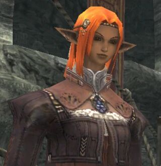
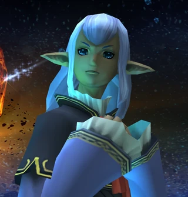
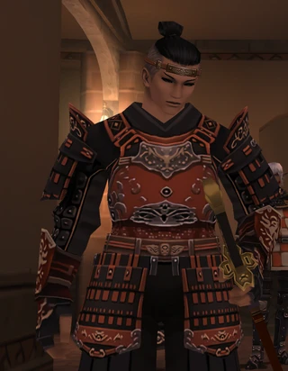
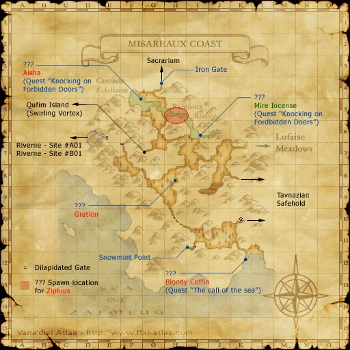
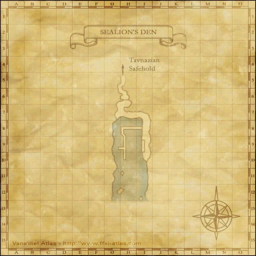

Before you begin
- Complete CoP 7-3: Fire in the Eyes of Men.
Starting point
Cid · Metalworks · H-8
People in this mission







Walkthrough
- After Cid's repair scene advances the log, complete the following three field encounters in any order.
- Bibiki Bay (F-6): examine the ??? inside the cave, defeat Dalham, then examine the ??? again. Its attacks accelerate as its health falls.
- Carpenters' Landing: enter from Jugner Forest (J-8), then examine the waterfront ??? at (I-9). Damage Cryptonberry Executor to bring out three Assassins. Defeat all four and recheck the ???; expect dangerous special abilities, including Mijin Gakure.
- Misareaux Coast (E-7): examine the Storage Compartment in the shed, defeat Boggelmann and check it again for the Vessel of light. Remove its defense boost and prepare for Blood Weapon.
- Return to Cid (H-8) for the Letters from Ulmia and Prishe, then speak to Sueleen in Sealion's Den (H-6).
Battle and progress notes
- Recheck each encounter object before leaving its zone. Native Carpenter's Landing credit requires all four Tonberries; older advice to let the adds disappear does not satisfy that check.
Completion and reward
Vessel of light; Letters from Ulmia and Prishe; access to the Tenzen mission battle.
Area maps
Open a zone below, then select a map to enlarge it. Match the named floors and grid coordinates in the steps; these are reference area maps, not a live position tracker.
Metalworks


Bibiki Bay


Jugner Forest


Carpenters' Landing


Misareaux Coast



Sealion's Den



Zone guides
References
Steps are an original summary of the linked walkthrough and reviewed source. Other servers’ bonus rewards are not included. How to read requirements, waits and battlefield notes.
Additional level-75 reference
|
Walkthrough
- After getting the cutscene with Cid at the end of Mission 7-3, wait until the next Vana'diel game day and to talk to Cid again for the first cutscene of Mission 7-4.
- You will now have to kill three NMs. They can be done in any order and all are uncapped.
Bibiki Bay
- Head to Bibiki Bay and find the ??? at F-6 inside a cave.
- Buff up and select the ??? to spawn a NM Sea Monk named Dalham.
- Dalham seems to be about level 72, judging from how it hits and takes damage from local pets.
- The number of attacks this monster gets each round increases as his HP drops. He will start the fight with normal attack speed, only hitting once per round. As his HP drops (about 70%) he will use a "2 Hour" animation and begin attacking twice per round. At about 40%, he will use the "2 Hour" animation again, and begin attacking 3 times per round. He will use it once more around 10~15%, attacking at near Hundred Fists speed.
- Builds resistance to Bind and Gravity extremely quickly.
- A level 75 THF/NIN can solo this monster with capped Marksmanship, Blind Bolts, Bloody Bolts, and some decent evasion gear.
- A level 75 NIN/WAR can solo this. Good evasion gear, and enfeebles are needed. meds reccomended.
- A level 75 RDM/NIN can solo this melee style with some effort.
- Has an Additional Effect: Water damage for about 21~ damage on a 75THF.
- After it is dead click the ??? again for a cutscene.
Carpenters' Landing
- Head to Jugner Forest (J-8) and enter Carpenters' Landing. The ??? is at I-9 on the edge of the water to the northeast of the docks.
- Buff up and select the ??? to spawn a NM Cryptonberry Executor (NIN)
- Once the Nin takes at least 1% of Dmg, three Cryptonberry Assassins (BLM, SMN, THF) will spawn.
- The Tonberries helpers are very resistant to sleep.
- The Executor will use Mijin Gakure unless you kill it first; this can do up to 4000 damage each.
- The Assassins use Manafont, Astral Flow and Perfect Dodge.
- The NMs all /say something when they use their 2h. The NIN says, "Through this we ssseek our just reward..." The Assassin's say, "...Take up thy laternsss. The truth we shall illuminate." The Nin's 2h can also be wasted by a person kiting it and staying out of range. The NIN will always use Mijin Gakure exactly 3 minutes after he spawns his buddies.
- The SMN has a random elemental pet. It will often use the Astral Flow of the same element, so you can try that Barspell. Its Astral Flow does about 800 damage to a level 75 player if not resisted. Note, the SMN Cryptonberry can summon TWO pets at once, so ignore his elemental, and be careful as he gets low on HP.
- The Executor has about 5000 HP.
- Bring Reraise items for the fight and if you have a Blue Mage or Summoner have them use Diamondhide or Earthen Ward to negate most of Mijin Gakure's damage. Members with less then 1,000 HP when Mijin Gakure is used will still get KO'd so plan accordingly.
- After the Tonberry or Tonberries are dead click the ??? again for a cutscene.
- It is possible to only defeat one of the Tonberries and still successfully complete this part of the mission and receive the cutscene. Once all four Tonberries are popped, if your party loses all Enmity (due to a wipe, etc.), the Tonberries will return to the ???, refill their HP, and despawn in the order that they reach the ???. If you manage to pull the last Tonberry before it despawns, you can kill that one and still get the cutscene.
Misareaux Coast
- Head to Misareaux Coast and check a Storage Compartment in the shed at E-7 to spawn the NM bugard Boggelmann.
- Remember to Dispel its Defense Boost special (Scutum).
- It has about 7600 HP, and will use Blood Weapon at low health.
- Easily soloed as 75 RDM with Bind, Gravity, and tier III nukes. Bind and Gravity resistance builds quickly. Alternativly sub NIN and kill it slow and steadily. Will take some time so make sure you are prepared.
- After it is dead click the Storage Compartment again for a cutscene.
Finishing the Mission
- Talk to Cid in the Metalworks (H-8) for a cutscene.
- You will recieve a KI from Cid. "Letters from ulmia and prishe"
- Talk to Sueleen in the Sealion's Den (H-6) for a cutscene.
Game Description
- Mission Orders
- The crystal propulsion unit of Cid's airship has been damaged. You are to call Louverance back from Carpenters' Landing, and Shikaree Z from Bibiki Bay. You must also find the Chebukki siblings in Tavnazia and retrieve the vessel of light.
Adapted from Eden Wiki: Calm Before the Storm · Contributors and history · CC BY-SA 4.0. Revision 45103. Layout, links and optional background text adapted for Zenith.